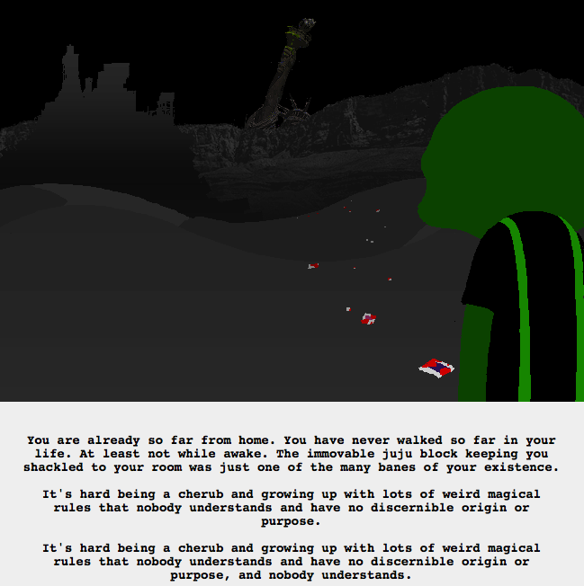

I feel like this is a reference to something and I just can’t put my finger on what. Aside from typical teenage angst, that is.
I’m pretty sure he was shackled so he couldn’t kill his sister! and for other reasons like that. But who shackled him?